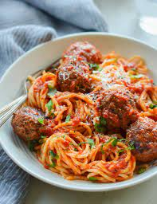

Spaghetti

Spaghetti is a long, thin, solid, cylindrical pasta. It is a staple food of traditional Italian cuisine. Like other pasta, spaghetti is made of milled wheat and water and sometimes enriched with vitamins and minerals. Italian spaghetti is typically made from durum wheat semolina
Ingredients:
- 1 teasponn olive oil
- 1 pound lean ground turkey
- 3 cloves garlic minced
- 1/2 cup onion diced
- 3 cups marinara sauce
- 2 1/2 cups low sodium chicken broth
- 1 tbs Italian seasoning
- 1 tbs fresh parsley
- 8 ounce dried spaghetti noodles
- Salt and pepper
- Get out required ingredients
- Cook spaghetti noodles for 6-8 minutes by getting a pot of water and salt
- Prepare ground turkey by putting in bowl and apply seasoning
- Cook meat in pan and applying tomato sauce